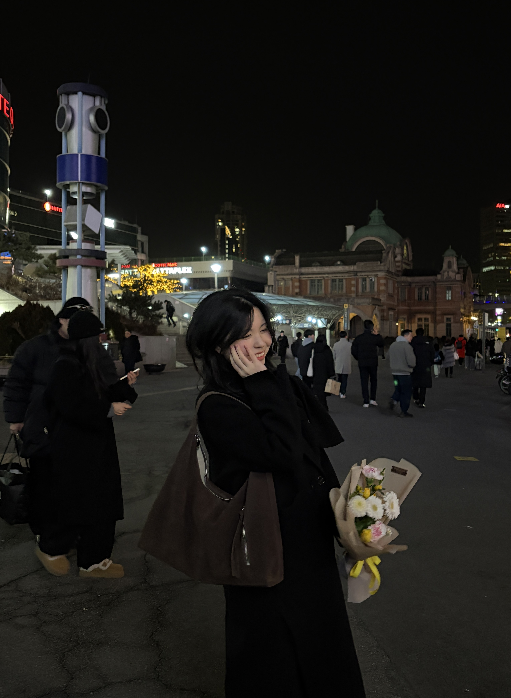

The Girl Behind the Screen
I'm Suyeon Park, a 21-year-old freshman majoring in Entrepreneurship at Sookmyung Women's University. My English name is Layla, which is much easier to say, so please feel free to call me that!
I started my university life a little later than my peers. Because I took a completely different path to get here, I thought it would be meaningful to share my unique history. That's exactly why I created this website.
By the way, instead of using standard website builders like Wix, I decided to play to my strengths. I coded this entire page from scratch using my experience as a developer. I hope you enjoy exploring my story!
